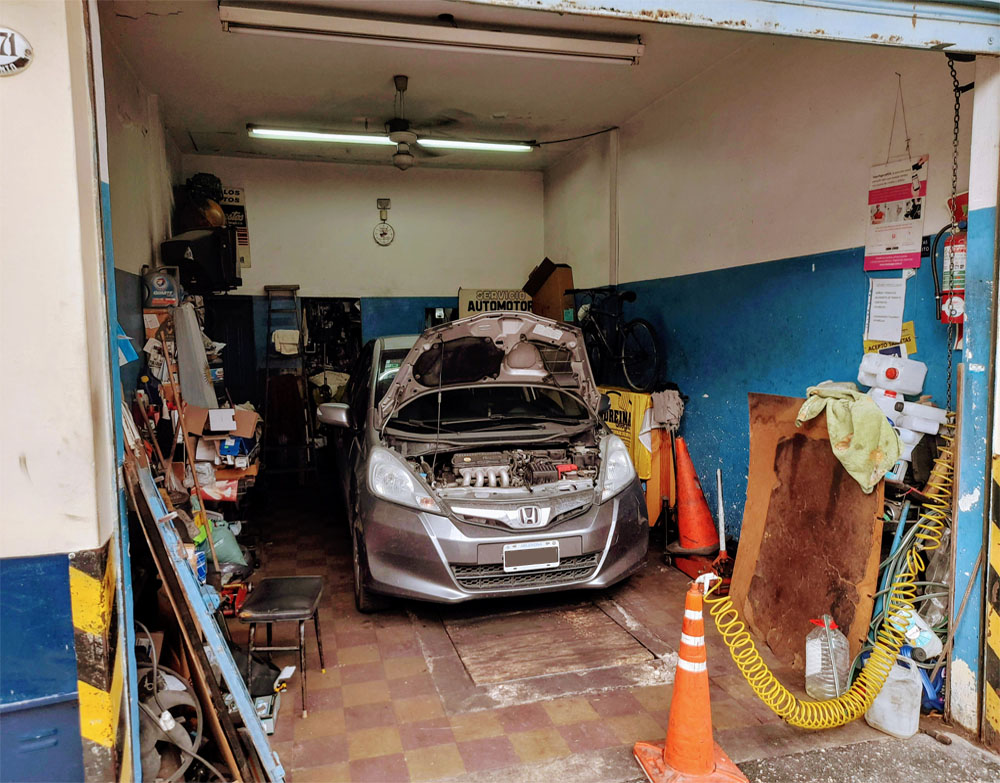

Nuestra misión es trabajar de manera eficiente, cumpliendo en tiempo y forma con las reparaciones que el vehículo requiera.
La responsabilidad, el esfuerzo y la honestidad, son los componentes fundamentales de este taller.
Contamos con precios accesibles y brindamos total transparencia en relación a los costos que se deberán afrontar durante la reparación.
